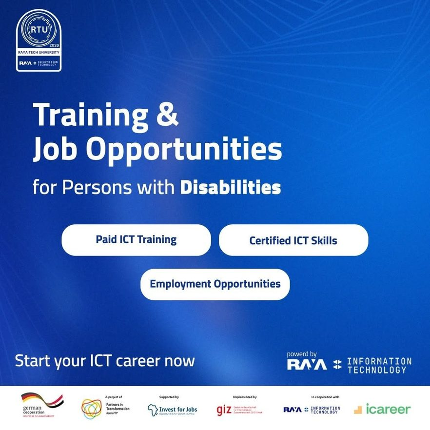
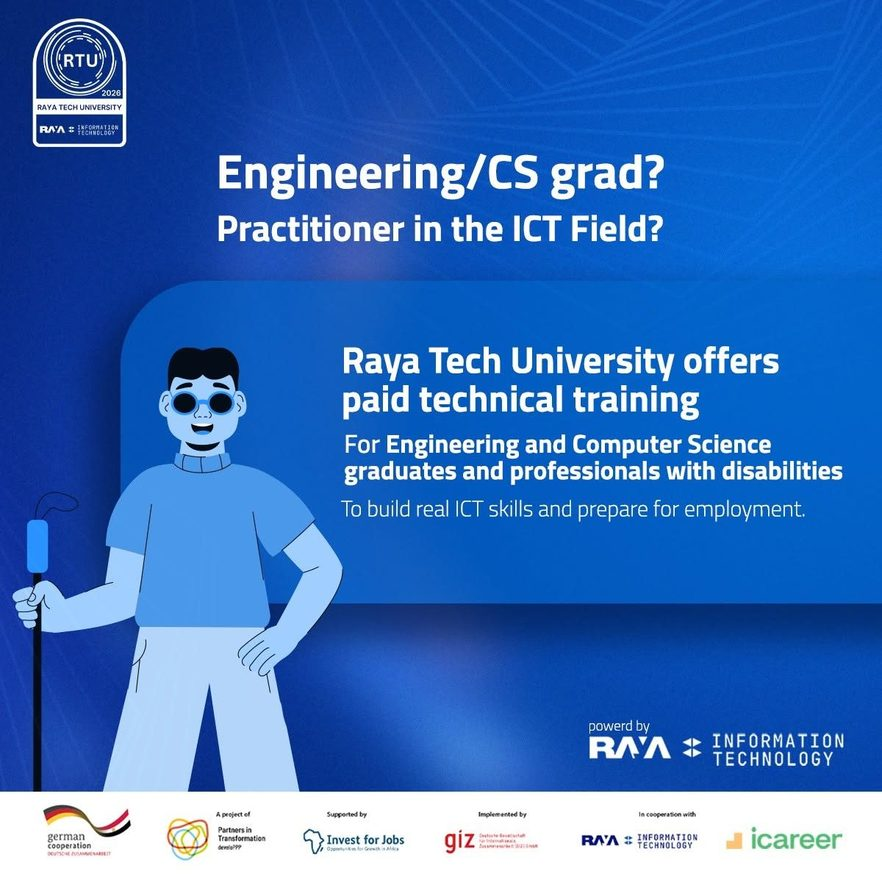
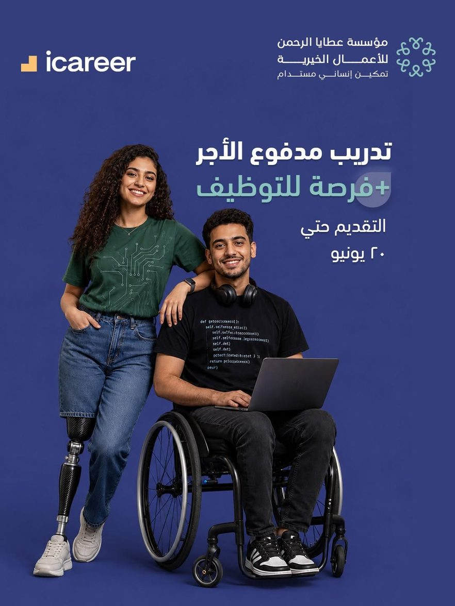
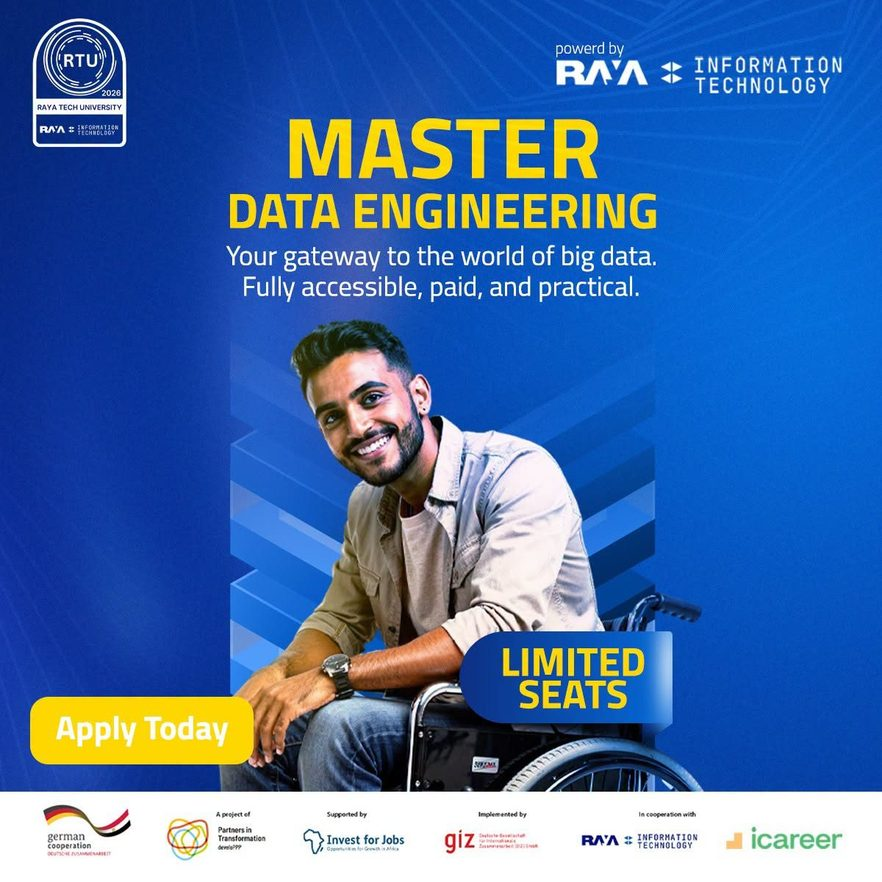
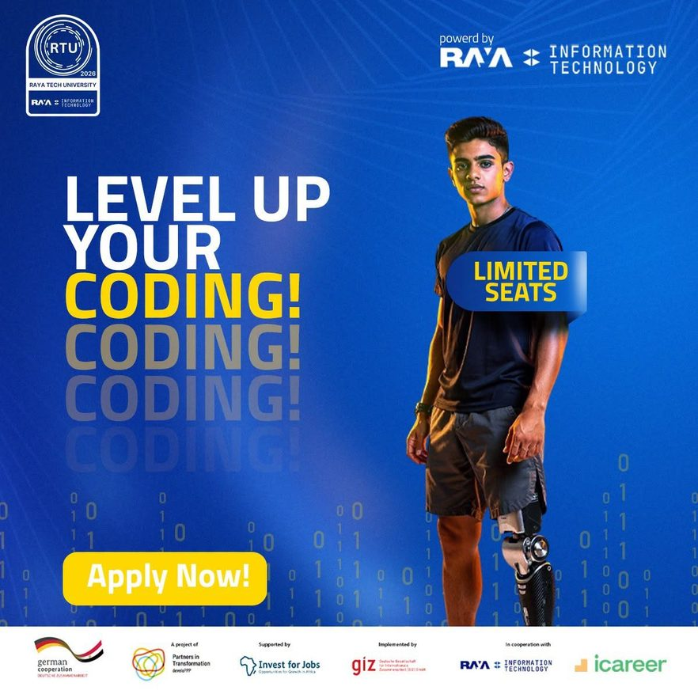
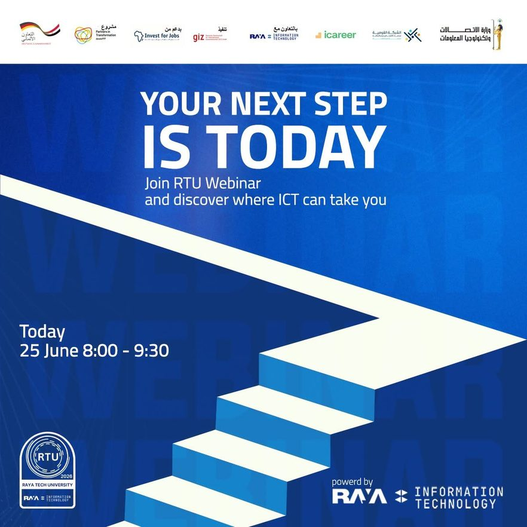

Employment · Inclusion
GIZ × Raya: ICT Inclusion Programme for Persons with Disabilities
The target group had only been admitted to ICT education three years earlier. I filled the cohort at 150%.
The Mandate
Recruit, prepare, and place 45 Persons with Disabilities holding ICT backgrounds across three cohorts into Egypt's ICT sector, with a policy review replacing skills identification, and a handbook capturing the method. Disability types in scope: sensory (visual and hearing impairment) and loco-motor.
The Challenge
Inherited after half a year with only 8 of 15 achieved in the first cohort, client satisfaction very low, and frustration ongoing. The root cause was structural: Persons with Disabilities had only been permitted to enter ICT universities three to four years before the project began. The qualified talent pool barely existed yet, and was invisible to every standard sourcing channel.
The Execution
- Ran a structured sourcing experiment across LinkedIn and Facebook rather than assuming any single channel would work.
- Partnered with NGOs, charities, and Persons with Disabilities communities, then leveraged peer referral inside those communities: mutual connections between people of the same background proved to be the channel that actually worked.
- Built an awareness and pre-interview coaching layer that directly addressed the confidence and self-presentation gaps observed in the first cohort, and raised candidate trust in the programme.
- Delivered a full accessibility policy review for Raya, verifying that processes, systems, and accommodations across the interview process, calls, and training all met the requirements of Persons with Disabilities.
- Documented the entire method in a handbook so equivalent programmes can be executed in future without me.
Results Delivered
- Cohort filled at 150% of requirement: from a starting point of 8 out of 15.
- Full funnel for two cohorts completed by the second cohort, with a buffer of candidates held in reserve against dropout.
- Accessibility policy review delivered to Raya covering the entire candidate journey.
- Replication handbook produced and handed over.
- Client satisfaction recovered from a low base.
Photos






Testimonial
Hear it from the people on the ground.
Have a project that needs a steady hand?
Book a free 15-minute call, no pressure, just a conversation about where you're stuck.
Book a Free 15-Min Call